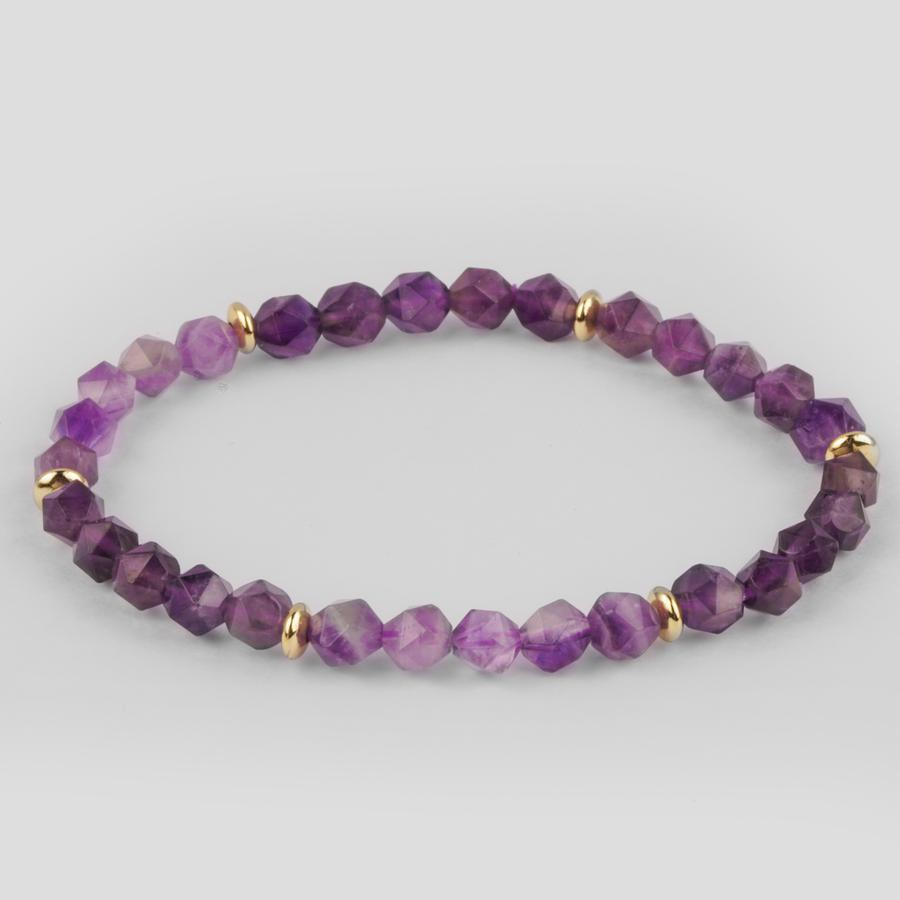

₮32,000
Нил ягаан болор: Эрт дээр үед аметист буюу нил ягаан болор чулуу нь алмаз эрдэнээс ч илүү үнэ цэнтэй, зөвхөн хаад ноёдын хэрэглэдэг чулуу байв. Титэм хүрдэд хүрч үйлчилдэг энэхүү чулуу нь айдас түгшүүрийг дарж, зөн совинтойгоо холбогдоход тусална. Мөн давхар энергийн хамгаалалтыг бэхжүүлж өгдөг.
БУЦАХ